Project idea
Recently National Parks Board distributed free seed packets to households, however most are so busy with work they end up forgetting to take care of the plants, mainly forgetting to water them. (At least that is a problem my parents face when attempting to grow vegetative plants).
With that I was thinking how it would be nice to have a machine that could automatically water the plants for you, so all you need to do is to remember to refill the water container.
Design brief
Project title: Automatic potted plant watering system
Function: Manages and dispenses water to multiple plant pots automatically
With my project idea finalized I created a Gantt chart to help manage and track the progress of my project. Given 4 weeks with 8 hours per week here is the rough plan I came up with:

Research
I did some research on existing projects and noted some features I can borrow to implement in my own project.
- Arduino Automatic Watering System from Instructables

Here a water sensor is used to detect if the moisture level in soil falls below a threshold, turning on a DC motor pump.
- CNC Arduino Plant Growing Machine from Instructables

This project is more complex and uses an addition of stepper motors to water multiple plant containers, it also has grow lights built into it to help cultivate the plants faster.
Going through multiple watering systems people have done, I decided the functions I want to implement into my design:
Have a water sensor detect soil dryness and control a DC motor water pump, this is the basics of an automated watering system.

As I want a single system to be able to manage multiple pots, I came up with a mechanism where the watering tube would be connected to a servo motor, where it will position to dispense water to the specific pot.
It basically works by positioning the tube (connected to the DC pump) to a spout which directs the water flow onto the plant pot.
And so I decided to call the project "Plant Fountain" as the method of water delivery from a spout makes it look like some sort of water fountain display (also helps in Aesthetics).
Designing
Next is desinging how the Plant Fountain would look like. Here is the list of materials I will be working with:
| Item | Quanitiy |
|---|---|
| Arduino controller | 1 |
| 9g Servo motor (positional) | 1 |
| Arduino water sensor | 3 |
| 5V DC motor water pump | 1 |
| Tubing (for pump) | sufficient |
| Flower pot | 3 |
| Water bottle / anything that can contain water | 1 |
| Plywood (3mm thick) | - |
| Clear acrylic (2mm thick) | - |
The design process was a back and forth from drawing to designing the model on FUSION 360. After multiple designs I finalise the design I like and think that would work:

The Plant Fountain structure consist of 2 parts: The tower and the Servo support.
×
The tower
The tower basically houses the electronics and the water channeling mechanism.
As it is box, shape, I started with the laser cut box I previously designed.
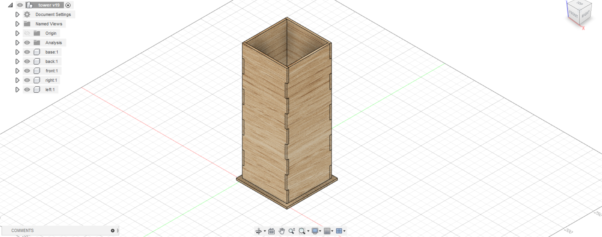Base
I first create a extension sketch for the base and join extrude the new profile. I also fillet the edges.
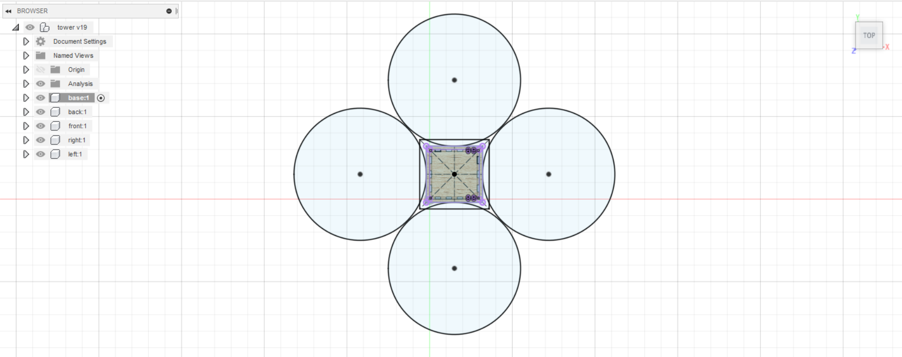 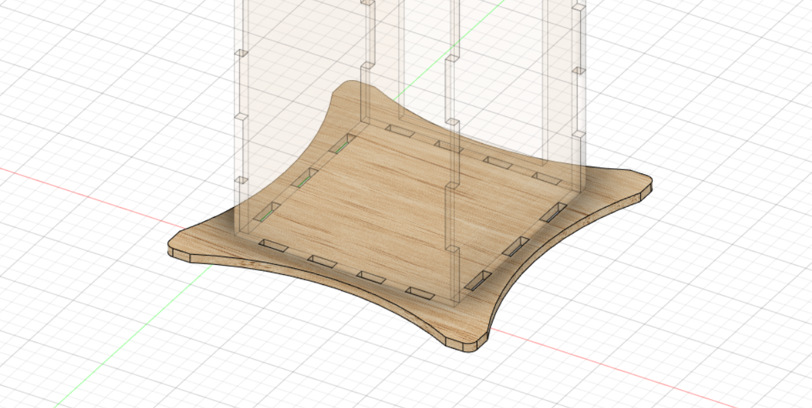
Water spout supports
I extrude cut a hole on 3 of the sides to the water spout width.
To create a floor for support, I cut tabs on the holes, created and extruded the floor as a new component and used the combine tool to cut the tabs.
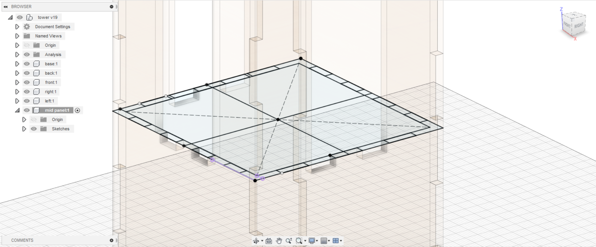

I cut a "T" shape hole for wires to go up to the top floor.
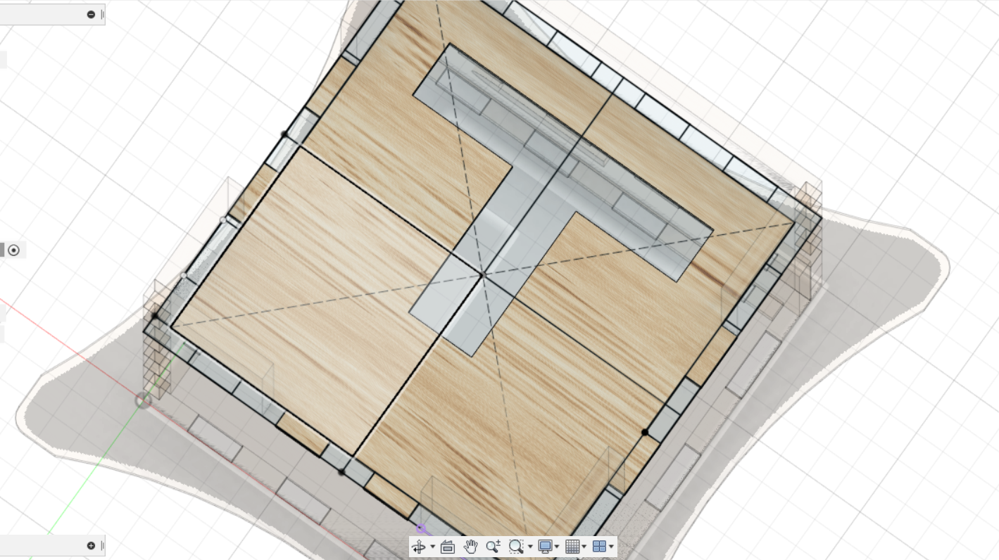
After that I decided to patch the hole to a smaller one so I can just slot in the spouts.
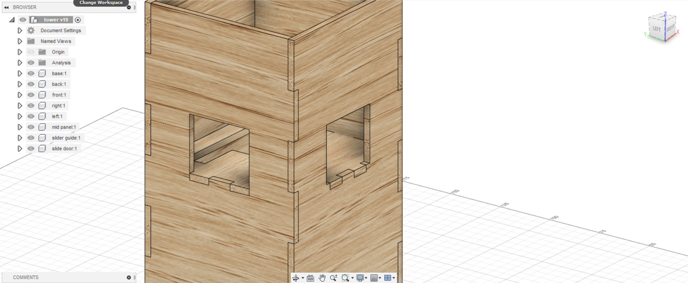
Slide Door
Cutting a door at the back so I can access the electronics. I start by cutting a hole at the back panel.

For the door to slide I have to add a guard. I cut tabs on the base, extrude a small guard and combine cut to create tabs on the guard. I also removed the tab on the side to create a slot for the door to slide out.
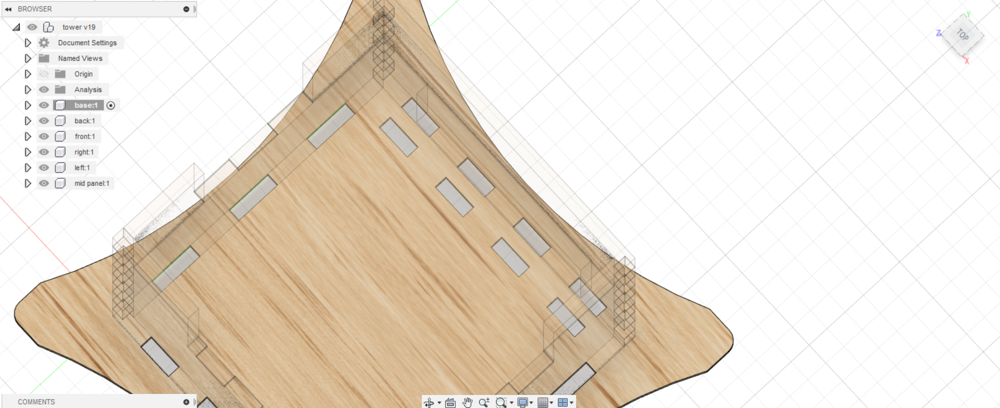
 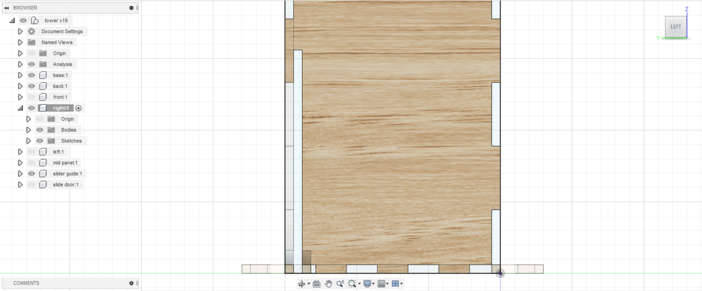
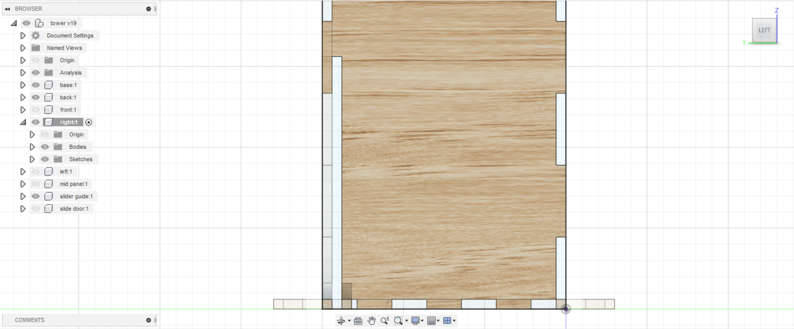
I then extrude out the door and cut handle holes.

I then cut 5mm holes for the wires.
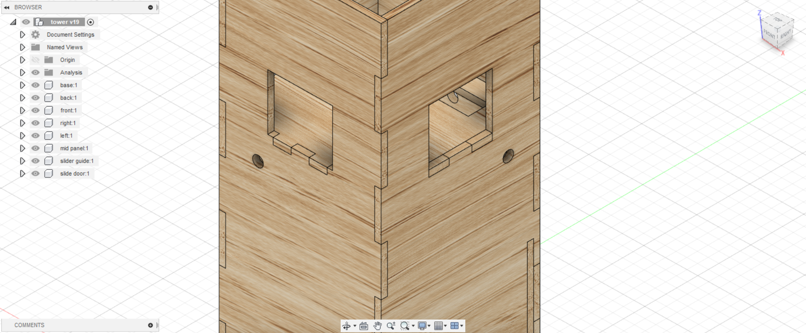
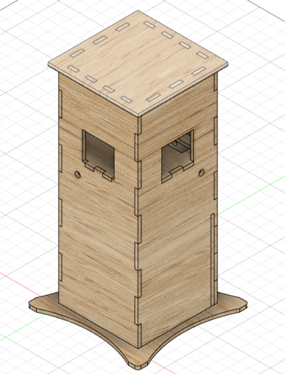
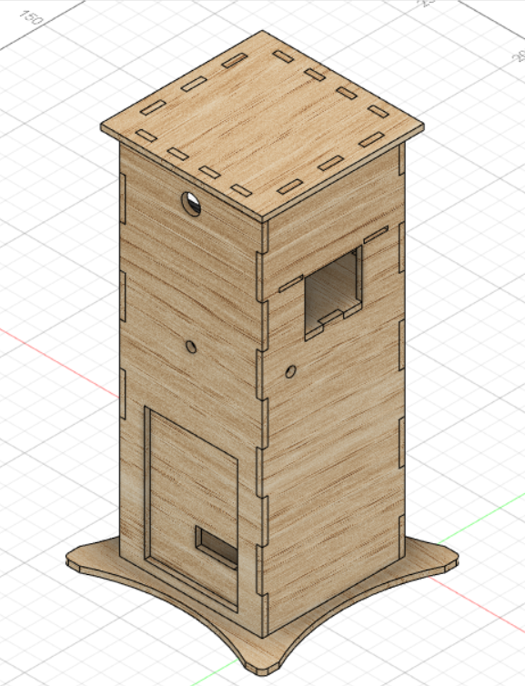
×
The Servo support mounts the servo and fixes the water spouts in place.
I start with the box interior and the servo hole and extrude it.
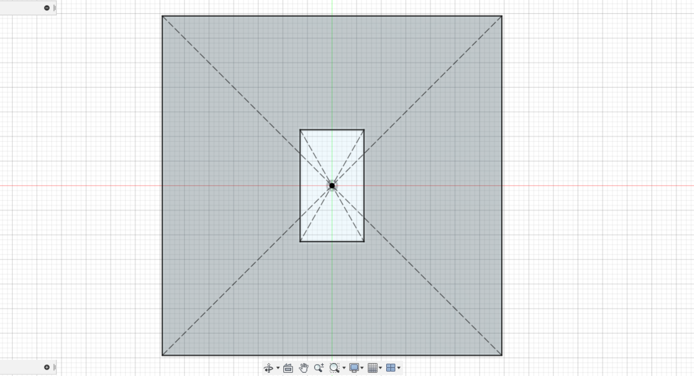
Next cut out holes for the spouts and wires.
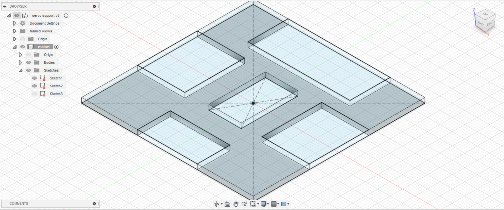
For the slots to secure the spouts in place, I cut out tabs on the sides.

I then extrude a new component on the sides. For the mirroring sides I Extrude a new component, starting from the other end.
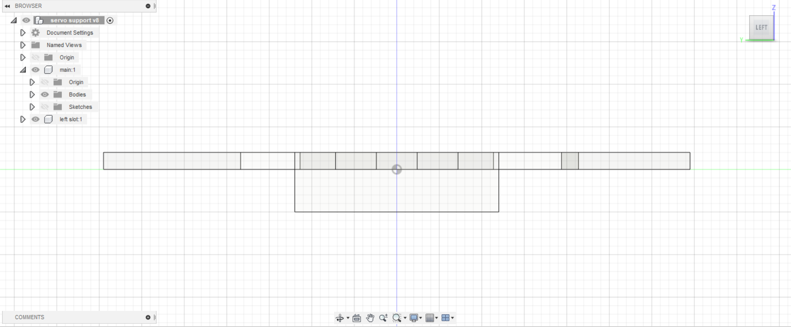

I then combine cut the form tabs on the other components
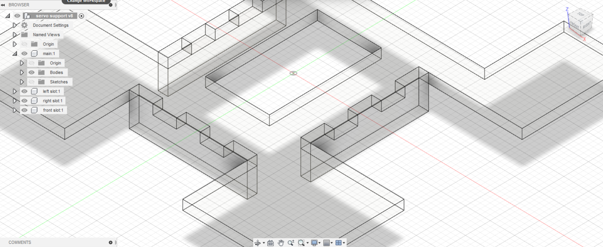
Lastly I cut holes for the servo screws.
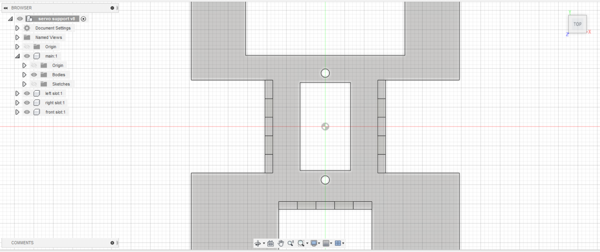
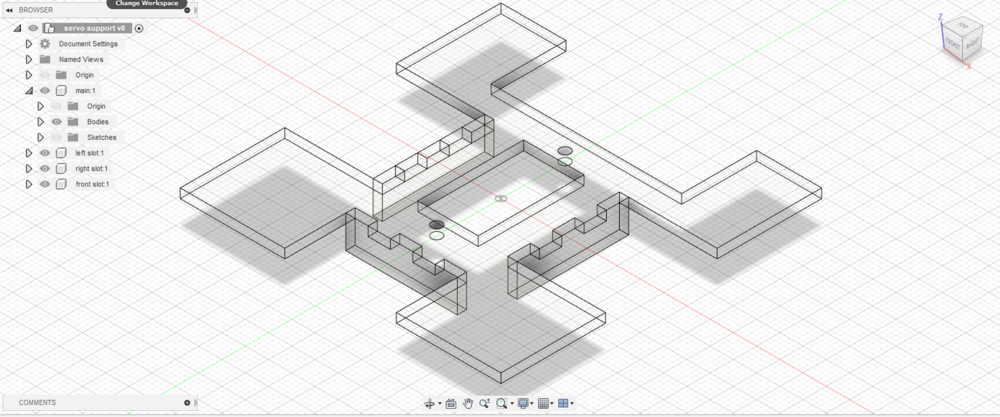